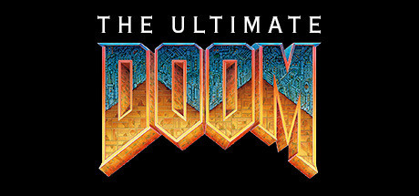

Ultimate Doom



O aclamado jogo que colocou o mundo em chamas. Mais o novo Episode IV: Thy Flesh Consumed. Os demônios vieram e os navais morreram. Exceto um. Você é a última defesa contra estas hordas vindas do inferno. Prepare-se para a mais intensa, mutante e sanguinolenta ação já vista!
| Todas as análises | --Link-- |
| Data de Lançamento | 30/abr./1995 |
| Desenvolvedor | id Software |
| Distribuidora | id Software |
Indisponível em Português(Brasil)
Este produto não está disponível no seu idioma. Confira a lista de idiomas oferecidos antes de comprar.Sobre este jogo
O aclamado jogo que colocou o mundo em chamas. Mais o novo Episode IV: Thy Flesh Consumed.Os demônios vieram e os navais morreram. Exceto um. Você é a última defesa contra estas hordas vindas do inferno. Prepare-se para a mais intensa, mutante e sanguinolenta ação já vista! O mundo virtual feito de texturas é tão real, que você não apenas joga DOOM - você o vive.
The Ultimate DOOM te leva além de qualquer coisa que você já tenha experimentado. Primeiro, você obtém os três episódios originais - São 27 incríveis níveis, com muitas explosões. Então ele realmente te leva longe com o mais novo episódio: Thy Flesh Consumed.
Agora você está morto. Justamente quando você pensa que está ficando bom em DOOM, você é acertado por Perfect Hatred, Sever the Wicked e sete outros níveis expert nunca antes vistos! Eles são tão difíceis, que os primeiros 27 níveis vão parecer uma voltinha no parque!
Requisistos de Sistema
| OS: | Windows XP, Vista, 7, 8 ou 10 |
| Processador: | 1.8 GHz ou equivalente |
| Memória: | 512MB RAM (1 GB recomendado) |
| Espaço em Disco: | 2 Gb de armazenamento |
| Placa de Video: | Placa de vídeo 3D compatível com DirectX 7 (DirectX 9 recomendado) |
| Título: | The Ultimate Doom |
| Gênero: | Ação |
| Lançamento: | 30/abr./1995 |
| Desenvolvedor: | id Software |
| Distribuidora: | id Software |
| Idiomas: | Inglês +4 |
| Dublagem: | Indisponível |
| - Um Jogador | |
| - JxJ tela dividida/compart. | |
| - Coop. tela dividida | |
| - Compat. total com controle | |
| - Salvamento em Nuvem |
Análises de Usuários
|
★★★★★ 5,0 de 5 estrelas |
Confira as opiniões dos clientes sobre este produto
★★★★★
Recomendado Eu não estou preso com vocês, Vocês estão presos comigo DoHell - 0.3h jogadas
★★★★
Recomendado legal mata demonio Marcelo Games 2020 - 13.5h jogadas
★★★★★
Recomendado To perdida no mapa socorro. Jogo muito bom dá pra matar demonios, menos os meus :C agatha - 9.6h jogadas |